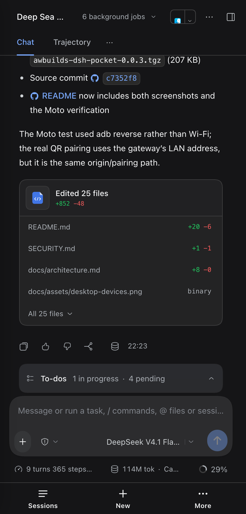

A LAN plugin for DeepSeek Harness Desktop
The full harness,
not a phone app.
DSH Pocket serves the real DeepSeek Harness UI to a paired phone over your own network. Sessions, approvals, diffs, and the composer — the same client, at thumb scale.

The whole workspace,
at thumb scale.
DSH Pocket does not reimplement the harness. It serves the same client, so the session view, tool calls, approval cards, and diffs are the ones you already use. Only the shape of the navigation changes.
-
Sessions
Live output, kept in place
Streaming assistant output, background jobs, and the trajectory view keep their state.
-
Approvals
Prompts that can reach you
Permission prompts and agent questions arrive on the phone, so a long run does not stall.
-
Diffs
The review cards, unchanged
Read changed files and follow the work without switching to a second screen or client.
-
Composer
A phone layout that stays put
Safe areas and the on-screen keyboard are handled; the bottom bar does not move out from under you.
No second app. No reimplementation. No sync layer.
Paired phones appear in Link phone with model, browser, and last-seen time. Remove one device, or rotate the key for all.
One listener.
One hop.
The DSH listener never leaves 127.0.0.1. The gateway binds the LAN address,
authenticates the phone, and proxies to the app's loopback port. That is the whole path.
The gateway is additive. A busy port, a missing TLS file, or an unreachable upstream never stops the desktop app; the dialog reports what failed.
GET /api/session/list Host: 127.0.0.1:PORT
Local by
construction.
The gateway is the only process your network can reach. Pairing is the credential; everything behind it stays on loopback.
- Pairing
- Six digits, five minutes, rate-limited. One use.
- Session
- A signed, HttpOnly device cookie. Thirty days.
- Devices
- A persistent allowlist. Remove one phone without touching the rest.
- Network
- LAN only. No relay, no account, no telemetry. TLS optional.
No account. No cloud. No public endpoint.
Install from
the app.
DSH owns its Desktop profile, so the CLI cannot install it. The Plugins page can. The npm package ships the built host and browser bundles; no local build.
-
1
Open Plugins
In DeepSeek Harness, open Plugins in the left sidebar.
-
2
Install the package
Keep the official npm registry selected and paste the package name.
-
3
Pair the phone
Click Link phone, scan the code, and the app opens.
@awbuilds/dsh-pocket@0.0.6
awbuilds-dsh-pocket-0.0.6.tgz
packages/dsh-pocket
awbuilds/dsh-pocket
macOS with DeepSeek Harness Desktop 0.2.1-rc.5. Phone and Mac on the same Wi-Fi.